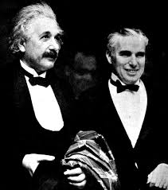

Всички са чували историята за ябълката и Нютон.Но тя води началото си от разказа на един съвременникна Нютон,
който си спомня неговия разказ как му е дошла на ум идеята за гравитацията.
Това станало при падането на една ябълка, докато той се бил замислил нещо. Запитал се защо ябълката пада винаги перпендикулярно на земята,
а не се отклонява настрани или нагоре, а винаги сочи центъра на Земята. Историята се среща и при други автори, но днес се счита, че вероятно е измислена от самия Нютон.
Всички са чували историята за ябълката и Нютон.Но тя води началото си от разказа на един съвременникна Нютон,
който си спомня неговия разказ как му е дошла на ум идеята за гравитацията.
Това станало при падането на една ябълка, докато той се бил замислил нещо. Запитал се защо ябълката пада винаги перпендикулярно на земята,
а не се отклонява настрани или нагоре, а винаги сочи центъра на Земята. Историята се среща и при други автори, но днес се счита, че вероятно е измислена от самия Нютон.
Учените, положили основите на физиката
Исак Нютон
(1642-1727)

Нютон е най-влиятелната личност в историята на западната наука. Признат за голям интелект още приживе, той и до ден днешен е все така възхваляван от научната общност.
Когато Нютон се ражда, физичния свят е слабо познат; когато умира, благодарение на откритията му вече се знае, че този свят се подчинява на математически точни закони. Приносът на Нютон в развитието на математиката и различни области на физиката изиграва важна роля в Научната революция.
В областта на механиката Нютон открива закона за всемирното привличане и чрез предложените Закони за движение поставя основите на класическата механика. Освен това той формулира принципа за запазване на импулса и момента на импулса и пръв показва, че движението на небесните тела и на предметите на Земята се подчинява на общи закони.
1665г. в Лондон избухва бубонната чума(тя убива 100 000 души за две години). Нютон е студент по това време и се спасява от епидемията като бяга в родното си село. Там прави опити с тънък сноп светлина, който пада върху стъклена призма и попада върху бял екран. Върху екрана се виждат редуващи се цветни снопове.
Нютон е студент по това време и се спасява от епидемията като бяга в родното си село. Там прави опити с тънък сноп светлина, който пада върху стъклена призма и попада върху бял екран. Върху екрана се виждат редуващи се цветни снопове.
Работейки над проблемите на физиката, Исак Нютон поставя началото на математическия анализ, който е в основата на развитието на науката до наши дни.
Алберт Айнщайн
(14 март 1879 – 18 април 1955)

Алберт Айнщайн е немски физик теоретик от еврейски произход, живял и работил в Германия, Швейцария и САЩ, известен като създател на теорията на относителността и допринесъл значително за развитието на релативистката космология. Неговото име се отъждествява с популярното уравнение E = mc² за еквивалентност на маса и енергия.
През 1921 година получава Нобелова награда за приноса си към теоретичната физика и откриването на закона за фотоелектричния ефект. Айнщайн доразвива теорията на Нютон, който е представял светлината като поток от частици-корпускули, но през 17-ти век е било невъзможно да се докаже. В началото на 20-ти век и развитието на науката това е станало възможно. Айнщайн дава име на тези частици - фотони.
Алберт Айнщайн се обявява категорично против войната, а по-късно и против производството и употребата на ядрени оръжия. Той е един от инициаторите за създаване на държавата Израел.
Алберт Айнщайн е роден в Улм, Германия на 14 март 1879 година. Расте като затворено и необщително дете. Много негови изследователи твърдят, че прохожда и проговаря доста късно. Когато е на 5 години, неговият баща му подарява компас. Алберт е дълбоко впечатлен и по-късно признава, че може би в този момент е осъзнал влечението си към науката и техниката.
Физиците се шегуват

Алберт Айнщайн обичал филмите на Чарли Чаплин и се отнасял с голяма симпатия към създадения от него герой. Веднъж той написал писмо до Чаплин: "Вашият филм 'Златна треска' е разбираем за всички и Вие ще станете велик човек. Айнщайн"
На това писмо Чаплин отговорил: "Аз се възхищавам от Вас още повече. Вашата теория на относителността никой в света не я разбира, а Вие все пак станахте Велик човек. Чаплин"